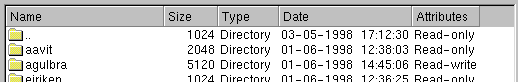
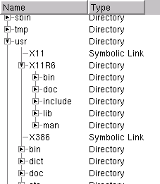

The QListView class implements a list/tree view. More...
#include <qlistview.h>
Inherits QScrollView.
Inherited by QFileListView.
It can display and control a hierarchy of multi-column items, and provides the ability to add new items at run-time, let the user select one or many items, sort the list in increasing or decreasing order by any column, and so on.
The simplest mode of usage is to create a QListView, add some column headers using setColumn(), create one or more QListViewItem objects with the QListView as parent, set up the list view's geometry(), and show() it.
The main setup functions are
To handle events such as mouse-presses on the listview, derived classes can override the QScrollView functions contentsMousePressEvent, contentsMouseReleaseEvent, contentsMouseDoubleClickEvent, contentsMouseMoveEvent, contentsDragEnterEvent, contentsDragMoveEvent, contentsDragLeaveEvent, contentsDropEvent, and contentsWheelEvent.
There are also several functions for mapping between items and coordinates. itemAt() returns the item at a position on-screen, itemRect() returns the rectangle an item occupies on the screen and itemPos() returns the position of any item (not on-screen, in the list view). firstChild() returns the item at the top of the view (not necessarily on-screen) so you can iterate over the items using either QListViewItem::itemBelow() or a combination of QListViewItem::firstChild() and QListViewItem::nextSibling().
Naturally, QListView provides a clear() function, as well as an explicit insertItem() for when QListViewItem's default insertion won't do.
Since QListView offers multiple selection it has to display keyboard focus and selection state separately. Therefore there are functions both to set the selection state of an item, setSelected(), and to select which item displays keyboard focus, setCurrentItem().
QListView emits two groups of signals: One group signals changes in selection/focus state and one signals selection. The first group consists of selectionChanged(), applicable to all list views, and selectionChanged( QListViewItem * ), applicable only to single-selection list view, and currentChanged( QListViewItem * ). The second group consists of doubleClicked( QListViewItem * ), returnPressed( QListViewItem * ) and rightButtonClicked( QListViewItem *, const QPoint&, int ).
In Motif style, QListView deviates fairly strongly from the look and feel of the Motif hierarchical tree view. This is done mostly to provide a usable keyboard interface and to make the list view look better with a white background.


Manual - the column width does not change automatically
Maximum - the column is automatically sized according to the
widths of all items in the column. (Note: The column never shrinks
in this case.)
See also: setColumnWidth(), setColumnWidthMode() and columnWidth().
Creates a new empty list view, with parent as a parent and name as object name.
Deletes the list view and all items in it, and frees all allocated resources.
[virtual]Adds a new column at the right end of the widget, with the header label and iconset, and returns the index of the column.
If width is negative, the new column will have WidthMode Maximum, otherwise it will be Manual at width pixels wide.
See also: setColumnText(), setColumnWidth() and setColumnWidthMode().
Examples: dirview/main.cpp
[virtual]Adds a new column at the right end of the widget, with the header label, and returns the index of the column.
If width is negative, the new column will have WidthMode Maximum, otherwise it will be Manual at width pixels wide.
See also: setColumnText(), setColumnWidth() and setColumnWidthMode().
Returns TRUE if the items in this list view indicate focus and selection state using all of their columns, else FALSE.
See also: setAllColumnsShowFocus().
Returns the current number of parentless QListViewItem objects in this QListView, like QListViewItem::childCount() returns the number of child items for a QListViewItem.
See also: QListViewItem::childCount().
[virtual]Remove and delete all the items in this list view, and trigger an update.
See also: triggerUpdate().
[virtual]Sets all items to be not selected, updates the list view as necessary and emits the selectionChanged() signals. Note that for multi-selection list views, this function needs to iterate over all items.
See also: setSelected() and setMultiSelection().
Returns the alignment of logical column column. The default
is AlignLeft.
Returns the text of column c.
Returns the width of column c.
Returns the currently set WidthMode for column c.
See also: setColumnWidthMode().
[virtual protected]Processes mouse double-click events on behalf of the viewed widget.
Reimplemented from QScrollView.
[virtual protected]Processes mouse move events on behalf of the viewed widget.
Reimplemented from QScrollView.
[virtual protected]Processes mouse move events on behalf of the viewed widget.
Reimplemented from QScrollView.
[virtual protected]Processes mouse move events on behalf of the viewed widget.
Reimplemented from QScrollView.
[signal]This signal is emitted whenever the current item has changed (normally after the screen update). The current item is the item responsible for indicating keyboard focus.
The argument is the newly current item, or 0 if the change was to make no item current. This can happen e.g. if all items in the list view are deleted.
Note that you may not delete any QListViewItem objects in slots connected to this signal.
See also: setCurrentItem() and currentItem().
Returns a pointer to the currently highlighted item, or 0 if there isn't any.
See also: setCurrentItem().
[protected slot]This slot handles auto-scrolling when the mouse button is pressed and the mouse is outside the widget.
[signal]This signal is emitted whenever an item is double-clicked. It's emitted on the second button press, not the second button release.
[virtual protected]Calls QListViewItem::paintCell() and/or QListViewItem::paintBranches() for all list view items that require repainting. See the documentation for those functions for details.
Reimplemented from QScrollView.
[virtual protected]Reimplemented for internal reasons; the API is not affected.
Reimplemented from QWidget.
Ensures that i is made visible, scrolling the list view vertically as required.
See also: itemRect() and QScrollView::ensureVisible().
[virtual]Redirects events for the viewport to mousePressEvent(), keyPressEvent() and friends.
Reimplemented from QObject.
Returns the first item in this QListView. You can use its firstChild() and nextSibling() functions to traverse the entire tree of items.
Returns 0 if there is no first item.
See also: itemAt(), itemBelow() and itemAbove().
[virtual protected]Reimplemented for internal reasons; the API is not affected.
Reimplemented from QWidget.
[virtual protected]Reimplemented for internal reasons; the API is not affected.
Reimplemented from QWidget.
Returns a pointer to the QHeader object that manages this list view's columns. Please don't modify the header behind the list view's back.
[virtual]Inserts i into the list view as a top-level item. You do not need to call this unless you've called removeItem( i ) or QListViewItem::removeItem( i ) and need to reinsert i elsewhere.
See also: QListViewItem::removeItem(), (important) and removeItem().
Returns TRUE if this list view is in multi-selection mode and FALSE if it is in single-selection mode.
See also: setMultiSelection().
Identical to item->isOpen(). Provided for completeness.
See also: setOpen().
Returns i->isSelected().
Provided only because QListView provides setSelected() and trolls are neat creatures and like neat, orthogonal interfaces.
Returns a pointer to the QListViewItem at viewPos. Note that viewPos is in the coordinate system of viewport(), not in the listview's own, much larger, coordinate system.
itemAt() returns 0 if there is no such item.
See also: itemPos() and itemRect().
Returns the advisory item margin which list items may use.
See also: QListViewItem::paintCell() and setItemMargin().
Returns the y coordinate of item in the list view's coordinate system. This functions is normally much slower than itemAt(), but it works for all items, while itemAt() normally works only for items on the screen.
This is a thin wrapper around QListViewItem::itemPos().
See also: itemAt() and itemRect().
Returns the rectangle on the screen i occupies in viewport()'s coordinates, or an invalid rectangle if i is a null pointer or is not currently visible.
The rectangle returned does not include any children of the rectangle (ie. it uses QListViewItem::height() rather than QListViewItem::totalHeight()). If you want the rectangle including children, you can use something like this code:
QRect r( listView->itemRect( item ) );
r.setHeight( (QCOORD)(QMIN( item->totalHeight(),
listView->viewport->height() - r.y() ) ) )
Note the way it avoids too-high rectangles. totalHeight() can be much larger than the window system's coordinate system allows.
itemRect() is comparatively slow. It's best to call it only for items that are probably on-screen.
[virtual protected]Reimplemented for internal reasons; the API is not affected.
Reimplemented from QWidget.
[virtual]Reimplemented for internal reasons; the API is not affected.
Reimplemented from QWidget.
[virtual protected]Paints rect so that it looks like empty background using painter p. rect is is widget coordinates, ready to be fed to p.
The default function fills rect with colorGroup().base().
[virtual]This function is obsolete. It is provided to keep old programs working. We strongly advise against using it in new code.
Removes i from the list view; i must be a top-level item. The warnings regarding QListViewItem::removeItem( i ) apply to this function too.
See also: QListViewItem::removeItem(), (important) and insertItem().
Repaints item on the screen, if item is currently visible. Takes care to avoid multiple repaints.
[virtual protected]Ensures that the header is correctly sized and positioned.
Reimplemented from QWidget.
[signal]This signal is emitted when enter or return is pressed. The argument is currentItem().
[signal]This signal is emitted when the right button is clicked (ie. when it's released). The arguments are the relevant QListViewItem (may be 0), the point in global coordinates and the relevant column.
[signal]This signal is emitted when the right button is pressed. Then arguments are the relevant QListViewItem (may be 0), the point in global coordinates and the relevant column.
Returns TRUE if root items can be opened and closed by the user, FALSE if not.
Returns a pointer to the selected item, if the list view is in single-selection mode and an item is selected.
If no items are selected or the list view is in multi-selection mode this function returns 0.
See also: setSelected() and setMultiSelection().
[signal]This signal is emitted whenever the set of selected items has changed (normally before the screen update). It is available both in single-selection and multi-selection mode, but is most meaningful in multi-selection mode.
Note that you may not delete any QListViewItem objects in slots connected to this signal.
See also: setSelected() and QListViewItem::setSelected().
[signal]This signal is emitted whenever the selected item has changed in single-selection mode (normally after the screen update). The argument is the newly selected item, or 0 if the change was to unselect the selected item.
There is another signal which is more useful in multi-selection mode.
Note that you may not delete any QListViewItem objects in slots connected to this signal.
See also: setSelected(), QListViewItem::setSelected() and currentChanged().
[virtual]Sets this list view to assume that the items show focus and selection state using all of their columns if enable is TRUE, or that they show it just using column 0 if enable is FALSE.
The default is FALSE.
Setting this to TRUE if it isn't necessary can cause noticeable flicker.
See also: allColumnsShowFocus().
[virtual]Configures the logical column column to have alignment align. The alignment is ultimately passed to QListViewItem::paintCell() for each item in the view.
[virtual]Sets the heading text of column column to iconset and label. The leftmost colum is number 0.
[virtual]Sets the heading text of column column to label. The leftmost colum is number 0.
[virtual]Sets the width of column column to w pixels. Note that if the column has a WidthMode other than Manual, this width setting may be subsequently overridden. The leftmost colum is number 0.
[virtual]Sets column to behave according to mode. The default depends
on whether the width argument to addColumn was positive or negative.
See also: QListViewItem::width().
[virtual]Sets i to be the current highlighted item and repaints appropriately. This highlighted item is used for keyboard navigation and focus indication; it doesn't mean anything else.
See also: currentItem().
[virtual]Reimplemented to let the list view items update themselves. f is the new font.
[virtual]Sets the advisory item margin which list items may use to m.
The item margin defaults to one pixel and is the margin between the item's edges and the area where it draws its contents. QListViewItem::paintFocus() draws in the margin.
See also: QListViewItem::paintCell().
[virtual]Sets the list view to multi-selection mode if enable is TRUE, and to single-selection mode if enable is FALSE.
See also: isMultiSelection().
[virtual]Sets item to be open if open is TRUE and item is expandable, and to be closed if open is FALSE. Repaints accordingly.
Does nothing if item is not expandable.
See also: QListViewItem::setOpen() and QListViewItem::setExpandable().
[virtual]Reimplemented to let the list view items update themselves. p is the new palette.
[virtual]Sets this list view to show open/close signs on root items if enable is TRUE, and to not show such signs if enable is FALSE.
Open/close signs is a little + or - in windows style, an arrow in Motif style.
[virtual]Sets item to be selected if selected is TRUE, and to be not selected if selected is FALSE.
If the list view is in single-selection mode and selected is TRUE, the currently selected item is unselected and item made current. Unlike QListViewItem::setSelected(), this function updates the list view as necessary and emits the selectionChanged() signals.
See also: isSelected(), setMultiSelection(), isMultiSelection() and setCurrentItem().
[virtual]Set the list view to be sorted by column and to be sorted in ascending order if ascending is TRUE or descending order if it is FALSE.
If column is -1, sorting is disabled.
[virtual]Sets the the number of pixels a child is offset from its parent, in a tree view to l. The default is 20.
See also: treeStepSize().
Examples: dirview/main.cpp
[virtual]Reimplemented to setx the correct background mode and viewed area size.
Examples: dirview/main.cpp
Reimplemented from QWidget.
[virtual protected]Reimplemented for internal reasons; the API is not affected.
Reimplemented from QWidget.
[virtual]Returns a size suitable for this scroll view. This is as wide as QHeader's sizeHint() recommends and tall enough for perhaps 10 items.
Reimplemented from QWidget.
[virtual protected]Reimplemented to let the list view items update themselves. s is the new GUI style.
Reimplemented from QWidget.
[virtual]Removes i from the list view; i must be a top-level item. The warnings regarding QListViewItem::takeItem( i ) apply to this function too.
See also: QListViewItem::takeItem(), (important) and insertItem().
Returns the number of pixels a child is offset from its parent. This number has meaning only for tree views. The default is 20.
See also: setTreeStepSize().
[slot]Triggers a size, geometry and content update during the next iteration of the event loop. Cleverly makes sure that there'll be just one update, to avoid flicker.
[protected slot]Updates the sizes of the viewport, header, scrollbars and so on. Don't call this directly; call triggerUpdates() instead.
Search the documentation, FAQ, qt-interest archive and more (uses
www.troll.no):
This file is part of the Qt toolkit, copyright © 1995-99 Troll Tech, all rights reserved.
| Copyright © 1999 Troll Tech | Trademarks | Qt version 2.0.2
|